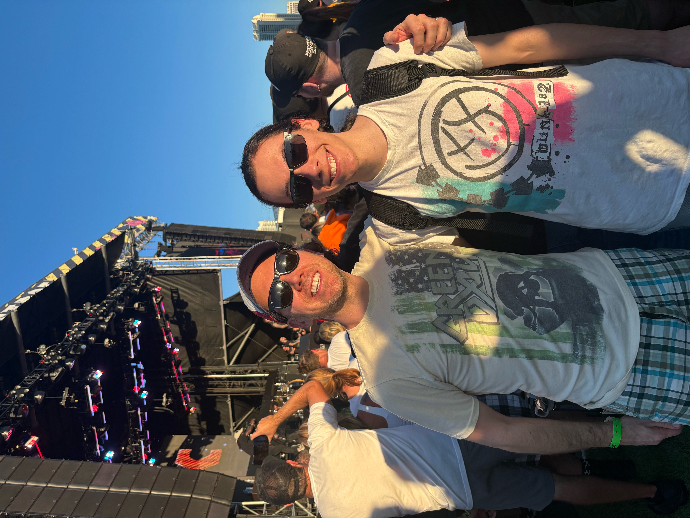

When We Were Young is a music festival hosted in Las Vegas, Nevada featuring various Alternative, Punk, and Emo
bands. I was fortunate enough to be able to attend this year's festival and wanted to talk through my experiences at
each of the shows. The first band I saw was Motion City Soundtrack. I was a little far from the stage, but the band
sounded great and played great songs. I saw Something Corporate next, around the same distance from the stage. This was one
of their first shows in over 10 years, and they sounded incredible, I was very impressed with their set. Next, I moved to one
of the smaller stages and saw No Pressure, a newer pop-punk band. They were very enthusiastic and sounded solid. After that
I saw Citizen and the standout here was the lead singer, as he sounded incredible. I got some lunch and headed back over to
the smaller stages to catch Turnover, who sounded incredible but unfortunately were a little too quiet and still for me. Next
I saw MxPx and got pretty close to the stage. They sounded great and were very excited to be there which is always a
bonus. After that, I saw Saves The Day, and their performance was enthusiastic and fun and sounded very similar to their
recordings - for better or for worse. I followed up with Say Anything, a band I've been meaning to see for a long time,
and boy did they not disappoint. This performance was phenomenal and had easily the best crowd of all the performances.
Finally, it was time for the headliners - blink-182 and Green Day. I had just seen blink-182 in May, and while they sounded
just as great here in Vegas, I was very far from the stage and they played an almost identical set to when I saw them
earlier this year. Green Day sounded perfect but unfortunately insisted on extending many of their songs for what I
think were downright cringe crowd interactions like repeatedly shouting "ay oh".
Overall I'd say this festival was a huge success. I had fun, stayed hydrated, and got to see some of my favorite bands.
There were no bad performances that I witnessed, only minor complaints here and there.

Photo of author and his dad at the MxPx performance during
When We Were Young Festival 2023
On October 20th, 2023 pop-punk legends blink-182 released their 10th LP, titled "One More Time".
This is their first album release with founding member Tom Delonge since 2011, who made a dramatic
and highly anticipated return to the band late last year. As a huge blink fan, I've been awaiting this
release. After several listens over the last few days, I'm ready to dicuss my thoughts - the highs, lows
and everything in between. This album is 17 tracks, with one interlude and two joke songs, and has a runtime
of 44 mins and 35 seconds.
One More Time... begins with a bang as Anthem Part 3's roaring drums and guitars swing into gear.
Anthem Part Two is one of blink's most popular songs, so given the name, this song had a lot to live up to - and
I think it does. The fast-paced, heavy punk drums along with Mark and Tom's fantastic lyrics make this one a solid 9/10
for me. Following that we enter the Ramones-inspired Dance With Me, which features a slightly poppier sound and fast
singing by Tom and Mark. This one is catchy and fun - 8/10. Next up we have Fell In Love, easily the poppiest song on
the album, and possibly the happiest lyrically. Fell In Love is a solid song that fails to hit quite as hard as the rest
of the album - 7/10. Terrified is track 4 and is downright incredible. This song features guitars with heavy distortion
and a beautiful key change during the chorus making it one of my favorites - 9.5/10. Next we have the title track,
One More Time. This song is a somber ballad of the band's history of breaking up and experiencing
traumatic events - it hits hard 8.5/10. Track 6 is titled "More Than You Know" and is my personal favorite.
It has a perfect combination of heavy guitars and experiments just the right amount with unique percussion,
easily a 10/10 for me. Track 7 is a joke song, which I will not be rating. Next, we have When We Were Young,
which stands out to me for its interesting time signature change during the chorus. It's catchy and fun - 8/10.
Following that is Edging, which was the lead single for this LP. Edging is a fun, catchy pop song that brought back
the amazing songwriting duo that is Mark and Tom. As a part of this LP though, it stands out to me as one of the weaker
tracks, still a solid 7.5/10. Track 10 - You Don't Know What You Got is a darker song lyrically and instrumentally.
Mark sings about his experience with cancer and how perspective-shifting nearing death is. The emotional impact is there,
but the chorus can get repetitive on repeated listens - 8/10. For track 11 we have Blink Wave, and I love this one. It's
fun, catchy, and has these fantastic synths throughout it, an easy 9.5/10. Bad News is the 11th track and tells a sad story
of divorce. The lyrics are fantastic and the instrumentals are solid - 8.5/10. Track 13 - Hurt is an interlude so I won't be
rating it, but it sounds almost magical. Turpentine follows, and to me feels like a classic punk blink song. The lyrics
and instrumentation are both great on this one - 9/10. The joke song F*ck Face follows, which I won't be rating. The next song
"Other Side" didn't stand out to me at first, but I think it's solid - 8/10. Finally, we have track 17 - Childhood.
Childhood is incredibly unique and is a beautiful album closer. It is the perfect way to end this incredible album - 9/10.